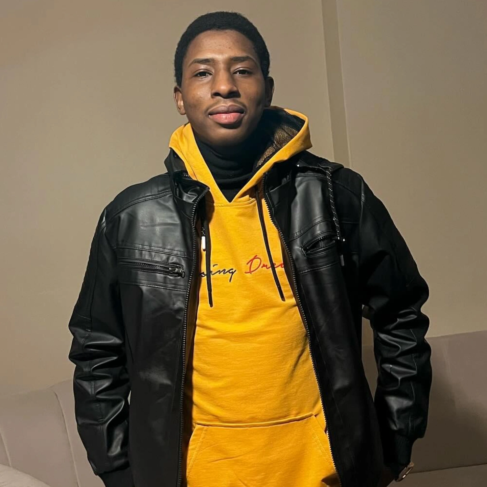

WELCOME TO MY PORTFOLIO
Hello, I'm Muhammad Wabili Tukur
Computer Science Student
Welcome to my academic portfolio! I am passionate about technology, software development and solving real-world problems through programming. I enjoy learning new technologies, building web applications and improving my technical skills through practical projects.
Discover More
About Me
I am a Computer science student with a strong interest in frontend development and software engineering. I have experience working with HTML, CSS and JavaScript, alongside programming knowledge in C and C++. I enjoy solving problems, exploring new technologies and developing practical solutions through programming. My goal is to continue improving my skills and become a skilled software developer.
Learn More